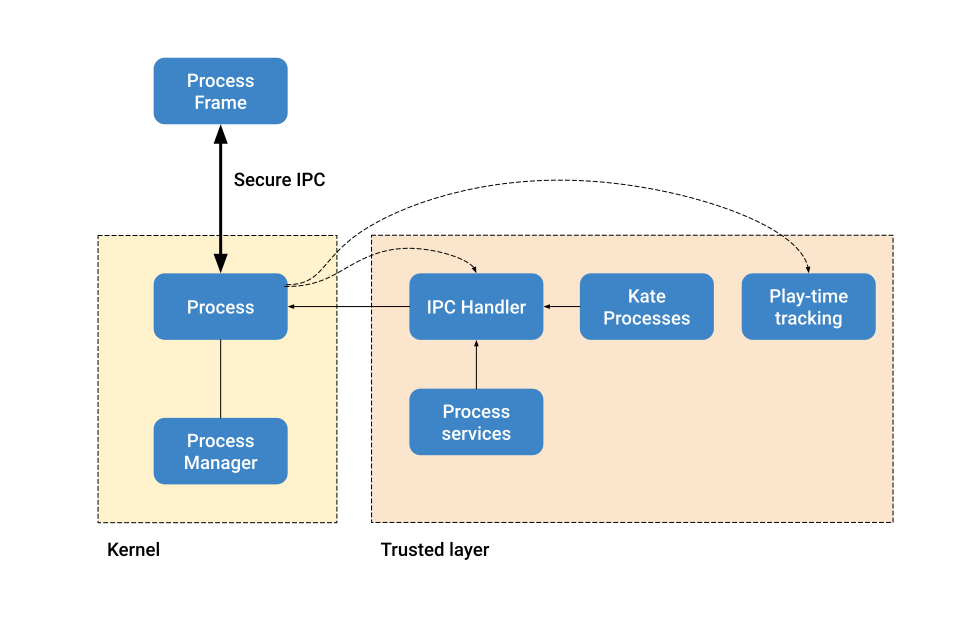

#K0004 — Processes#
- Author:
Niini
- Started:
2023-12-08
- Last updated:
2023-12-08
- Status:
Design in progress
Timeline#
First draft |
Proof of Concept |
Stable implementation |
|---|---|---|
2023-12-08 |
— |
— |
Summary#
Kate allows a user to install multiple applications in a single shared system, and then launch those applications to operate on the system resources. It’s important that we make sure these applications are properly isolated, and that they can access the resources they need and have access to securely.
To that end Kate manages each of these launched applications as a “Process”, and provides a secure channel for the process to communicate with the kernel, resources, and with other applications.
Design-wise, processes in Kate are not too unlike those in other operating systems, except for the fact that Kate is hosted, so the host operating system (or Browser) manages the memory and time-sharing, while Kate only manages output and resource access. This makes the kernel significantly simpler.
Technical summary#
Kate has two distinct process objects, since it’s a layered operating system.
At the kernel layer you have Process (and ProcessManager), which provide
the basic operating capabilities of what it means to be a process.
Processes in the kernel layer only have basic output capabilities, but no access to shared resources. This is because the kernel layer is similar to a microkernel, and it does not do a lot.
At this layer, the main job of Process and ProcessManager is to create
a fully isolated area for the application code to run, and to provide a
secure channel that this particular application code can use to communicate
with the kernel, in a fully authenticated fashion.
For the Browser-based implementation, isolation is provided by a sandboxed iframe with no powerful capabilities. Authenticated messaging is provided by exchanging MessagePorts in a straightforward handshake.
The ProcessManager keeps track of which processes are running at any given
time and provides resolution to process objects by their unique identifier,
but it doesn’t do more than that.
At the trusted-space layer, we have KateProcesses. This service handles
spawning processes in the kernel layer and starting up the process
(adding it to the screen, setting up the IPC handlers, starting up the
play time tracking, providing a way of reading files, etc).
Because processes run isolated, they must send a message to the kernel every time they wish to do something outside of basic output capabilities. This goes also for things like reading files that the application owns. Messages must provide a unique identifier, which the trusted-layer side uses to reply to. Any further coordination and evaluation of the message happens in the trusted-space layer.
This gives rise to the following topology:
Spawning phase#
Processes start their lifecycle by being spawned — the kernel will allocate an isolated frame for them to run, and then load the application’s startup code in this frame.
Application code is linked to the Kate API (and potentially any bridges) before being loaded in the frame. And it is up to the Kate API to set up the application side of the IPC.
This is also the point where we decide which files the process will have access to, by providing a layered file system to the process. Currently this file system consists only of the files in the cartridge.
Pairing phase#
Once the frame exists, it’s loaded in the page and the pairing process starts. This is a straightforward handshake:
The kernel tells the application it’s ready to pair;
The application sends a pairing request to the kernel using its shared secret, and provides a messaging channel for the kernel to reply;
The kernel validates the source and the secret. Then it creates a new secure channel between itself and the application and sends it over the channel the application shared previously.
Once the pairing process is concluded, communication happens exclusively through the message channel the kernel has created.
Service initialisation#
Once the kernel and the process are properly paired, we can start up and link the process to the additional trusted-space services. This is where we spin up the rendering process, the input-forwarding process, and the IPC-handling process.
The IPC-handling process itself takes care of forwarding messages sent by the application process to the relevant services and APIs, and then takes care of replying to the application process with the result of that operation. Further authorisation happens on the services/APIs themselves.
Process lifetime#
During the process lifetime, it sends heartbeats and metrics to the kernel in addition to the regular messages it sends for requesting API permissions. This is necessary because the kernel is also not allowed to read the state of the application processes directly; it then treats it in a similar fashion to a remote node in a distributed system.
Eventually processes go through changes of state (e.g.: pausing/unpausing), and die. The kernel uses explicit transition messages to keep track of what’s happening with the process, and may use heuristics based on heartbeats and metrics when processes go rogue or become uncommunicable to take further actions to ensure system stability and responsiveness.
Formal semantics#
Processes can be thought of as objects that communicate between each other and have access to different sorts of resources. This gives rise to the following model:
type Meta = {id, capabilities, files, runtime}
type Manager = {[id -> Process...]}
type Frame-buffer = [msg...]
type Process =
| Spawned(meta, frame, secret, public-channel)
| Pairing(meta, frame, secret, public-channel)
| Paired(meta, frame, exclusive-channel)
| Dead
type Frame =
| Spawned(secret, public-channel)
| Pairing(frame-channel)
| Paired(exclusive-channel)
Manager m ::
| spawn(Meta) -> Spawned
| pair(Spawned) -> Paired
| kill(Process) -> void
Process p ::
| send({type, payload})
Frame f ::
| send({id, type, payload})
If we look at things from the perspective of the process manager. We may spawn a process, which then allows us to pair the process, and eventually we might choose to kill the process. Note that communication moves to different channels over the course of this process.
Manager semantics#
m.spawn(Meta)#
m { [i1 -> p1, ..., iN -> pN] }.spawn({iA, files, runtime, ...}) =
let Secret = unique-secret();
let Code = runtime-code(files, runtime, Secret);
let Frame = sandboxed-frame(Code);
m {[i1 -> p1, ..., iN -> pN, iA -> Spawned({iA, ...}, Frame, public-channel)]}
That is, we can spawn a process from any runtime configuration given that the id it’s been assigned does not conflict with one we’re running already. This restriction is Kate-specific, and only here because we do not offer tools to concurrently operate on a Process’ backing storage and resources, so we can only run one copy of the application at any given time.
We then set up the runtime code that will be run in the sandboxed frame. This includes a uniquely generated secret, whose only purpose is to make it more likely that it is the Kate API that is establishing the connection; note that in case the pairing is hijacked and other application code establishes the connection that has no bearing on the security guarantees we provide, as we treat all code in the frame with the same untrusted level. But this prevents accidental pairings that would cause the API to not work in the process, as it doesn’t have a channel to the kernel.
Finally we produce a spawned frame using the public channel, which is shared by all processes in the system.
m.pair(Spawned)#
m {[i -> p, ...]}.pair(Spawned) =
on process.Spawned(meta, frame, secret, public-channel):
public-channel <- PAIRING_READY;
state is Pairing(meta, frame, secret, public-channel);
on frame.Spawned(secret, public-channel):
wait public-channel : process sent PAIRING_READY:
let {KernelPort, FramePort} = message-channel();
public-channel <- PAIR {KernelPort};
state is Pairing(FramePort);
on process.Pairing(meta, frame, secret, public-channel):
wait public-channel : frame sent PAIR {frame-channel, secret}:
let {KernelPort, FramePort} = message-channel();
frame-channel <- PAIR {FramePort};
state is Paired(meta, frame, KernelPort);
on frame.Pairing(frame-port):
wait frame-channel : process sent PAIR {exclusive-channel}:
for all msg in Frame-buffer: frame.send(msg)
state is Paired(exclusive-channel);
That is, the we start with a public channel, which is usable by all processes in the system, and send the frame a pairing-ready message. The frame then creates a new channel and asks the kernel to pair. The process creates a new exclusive and authenticated channel between the two parties and sends the channel over to the frame. At this point both the process and the frame are considered paired, and communication can proceed in the exclusive channel.
Note that since cartridge code _may_ start running before the frame is fully paired, it can end up buffering messages. These buffered messages are all sent in a burst once the frame is paired.
m.kill(Process)#
m {[i -> p, ...]}.kill(p) =
unload-application(p1);
m {[...]}
Killing a process is a one-sided, ungracefull operation. The kernel unloads the application code from memory and removes it from the process table.
Message sending semantics#
p.send(msg)#
Process.Paired(exclusive-channel).send({type, payload}) =
exclusive-channel <- {type, payload}
That is, sending a message from a process to the frame succeeds whenever they’re fully paired, but the process does not wait for any response to it. All process -> frame requests are fire-and-forget.
f.send(msg)#
Frame.Paired(exclusive-cahnenl).send({id, type, payload}) =
exclusive-channel <- {id, type, payload}
wait exclusive-channel : proces sent REPLY { ok, value }:
return {ok, value}
Frame.send({id, type, payload}) =
Frame-buffer = [{id, type, payload}, ...Frame-buffer]
Sending messages from the frame to the process is likewise straightforward once both are paired, with the added capability that these messages include an unique identifier that the process uses to send a reply back (as they usually relate to API calls that must return a resource).
Additionally, since cartridge code may start running before the frame is fully paired, any message sent in that time is buffered and sent as soon as a successful pairing happens.
How is this feature dangerous?#
Almost every other security guarantee in Kate depends on processes being correctly isolated. Here we consider risks from users’, cartridges’, and Kate’s perspectives.
- Frames accessing the Kernel directly:
Because frames are embedded in the same document as Kate, it’s possible that they may access the Kernel directly, bypassing the security features Kate relies on.
Kate mitigates this by relying on the Browser to isolate the frame, loading it in an opaque origin (through the
sandboxfeature of iframes).- Frames accessing powerful features directly
Because browsers allow access to powerful features, such as camera and microphone, by default, there’s a risk that frames may access these powerful features directly, violating Kate’s guarantees of privacy and security.
Kate mitigates this by setting restrictive security policies in the Frame, using a combination of Sandbox policies, Permissions policies, and Content Security policies. For features that are not covered by the policies, e.g.: user agent strings, the Kernel uses source code translation and dynamic patching to remove access to it.
- Denial of service attacks:
Because the Kernel is not involved in managing computational resources such as memory and CPU, there’s a risk that processes may unfairly use them in a way that makes Kate unusable, or results in Kate beung killed by the OS.
Kate cannot mitigate this without the browser providing a way of setting computational limits on sub-processes, so we have to live with the risk. The impact of this is limited due to Kate’s design of running only a single process in foreground.
- Leaking sensitive data from privileged processes:
Because Kate runs the Kernel and the untrusted application processes in the same web-page, there’s a risk that untrusted processes may abuse side-channel attacks to read privileged data.
Kate does not mitigate this directly, but relies on Browser’s hardening against Spectre and similar side-channel/timing attacks. This means that for our security properties to hold, browsers need to handle Kate’s kernel process and the applications’ processes in separate processes and sandboxes. At the time of writing, Chrome and Firefox still consolidate frames created from Blob/Data URLs.
The impact of this is, however, smaller due to the fact that application processes have no network or other out-of-process I/O access by default, so exfiltration of this data is often not possible, at least without requesting powerful capabilities and having explicit user consent.
- Blocked cartridges due to security restrictions:
Because the kernel assigns fairly restrictive policies to the frame that host the cartridge’s code, it’s possible that a cartridge that would work fine in a web context does not work in Kate.
We mitigate parts of this by offering Bridges for developers to emulate web features using the more restrictive model Kate has, however we accept the impact (“the cartridge doesn’t run”) in favour of improved security for players, and shift the burden of finding a safe/Kate-friendly way forward to application developers instead.
- Cartridge code pairing instead of Kate API code:
Because the cartridge code starts running before the pairing process has finished, it’s technically possible (but improbable) that the cartridge code wins the race to provide a pairing channel to the kernel code. In that case the kernel would be communicating directly with the cartridge code instead of the injected Kate API code.
We mitigate this by requiring a secret shared between the kernel and the Kate API code when pairing, however, since the kernel treats the whole cartridge process as untrusted, this impacts only the cartridge developers, in the sense that the Kate API and bridges would not do any of the dynamic emulation work, and developers would be responsible for re-implementing that code using the IPC port directly.
- Authorisation confusion
Because the kernel handles all requests for resources and these come from untrusted cartridge processes, there’s a risk that the kernel might honour a request the cartridge should not have permission for.
We address this by using a separate authenticated channel for each process, and storing the capabilities in the process’ object on the kernel side. This way the kernel always knows what set of capabilities to use when handling a message coming from an arbitrary port. Actual capability authorisation is done by the Capability Supervisor, as described in #K0001 — Capabilities.
- Buffered messages due to long pairing:
Because the cartridge may start running code that sends messages to the kernel process before pairing is complete, the Kate API code will buffer those messages and send them later, this might cause increased memory usage.
We mitigate this by placing a heuristic limit on the buffer size, such that if we stall or never complete the pairing process, the buffered messages have less chance of taking down the whole device. Further computational restrictions are placed by the browser itself, who may kill the tab if the allocated memory is too high.
- Pairing never completes:
Due to the distributed nature of Kate’s processes, where neither side actually knows the internals of the other and thus is unable to know if progress is being made, it’s possible that pairing stalls and never completes, leaving the player with an eternal “loading” screen.
While players can kill these processes on their own, the kernel process also places an upper-bound limit on the time pairing can take, as under usual circumstances it should happen near-immediate.